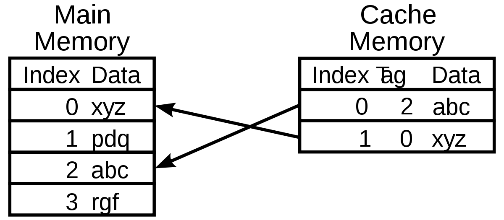
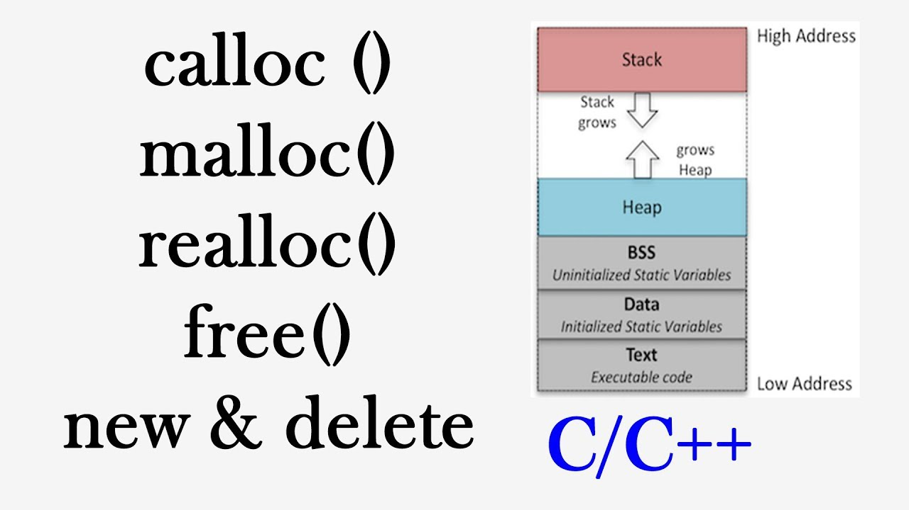
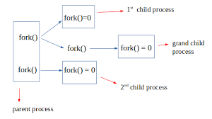

Cache Lab
Implemented a Cache Memory Simulator that imitates the functionality of an L1 cache. The cache simulates the behavior of memory accesses from trace files with a Least Recently Used eviction policy.
Malloc Lab
Designed and implemented a Dynamic Memory Allocator library which supports Standard C Library calls (malloc, calloc, realloc, free). The allocator was optimized though the use of explicit and segregated lists to store free blocks, the modification of first-fit and best-fit search algorithms, a LIFO insertion policy, and the elimination of footers for allocated blocks. The result minimized internal fragmentation and achieved an optimized balance between memory utility and allocation throughput.
Shell Lab
Implemented a simple UNIX-like shell which supports I/O redirection, built in linux commands, signal control, and job control through the ability to fork multiple child processes, supporting foreground and background jobs.
Proxy Lab
Designed and implemented a concurrent web-caching HTTP proxy, acting as the intermediary connection between client and server. The caching policy is Least Recently Used, and the implementation uses POSIX threads, which provides the locking primitive to avoid race conditions and synchronizing access to shared resources.